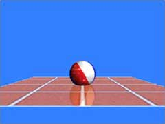

|
第26課 |
 |
|  |
剪裁平面，蒙板緩存和反射:
在這一課中你將學會如何創建鏡面顯示效果，它使用剪裁平面，蒙板緩存等OpenGL中一些高級的技巧。 |
|
 |
 |
歡迎來到另一個激動人心的課程，這課的代碼是Banu Cosmin所寫，當然教程還是我自己寫的。在這課裡，我將教你創建真正的反射，基於物理的。
由於它將用到蒙板緩存，所以需要耗費一些資源。當然隨著顯卡和CPU的發展，這些都不是問題了，好了讓我們開始吧！
|  |
|
下面我們設置光源的參數 |
|
static GLfloat LightAmb[] = {0.7f, 0.7f, 0.7f, 1.0f}; // 環境光
static GLfloat LightDif[] = {1.0f, 1.0f, 1.0f, 1.0f}; // 漫射光
static GLfloat LightPos[] = {4.0f, 4.0f, 6.0f, 1.0f}; // 燈光的位置
|
下面用二次幾何體創建一個球，並設置紋理 |
|
GLUquadricObj *q; // 使用二次幾何體創建球
GLfloat xrot = 0.0f; // X方向的旋轉角度
GLfloat yrot = 0.0f; // Y方向的旋轉角的
GLfloat xrotspeed = 0.0f; // X方向的旋轉速度
GLfloat yrotspeed = 0.0f; // Y方向的旋轉速度
GLfloat zoom = -7.0f; // 移入屏幕7個單位
GLfloat height = 2.0f; // 球離開地板的高度
GLuint texture[3]; // 使用三個紋理
|
ReSizeGLScene() 和LoadBMP() 沒有變化 |
|
GLvoid ReSizeGLScene(GLsizei width, GLsizei height)
AUX_RGBImageRec *LoadBMP(char *Filename)
|
下面的代碼載入紋理 |
|
int LoadGLTextures() // 載入*.bmp文件，並轉化為紋理
{
int Status=FALSE;
AUX_RGBImageRec *TextureImage[3]; // 創建三個圖像
memset(TextureImage,0,sizeof(void *)*3);
if ((TextureImage[0]=LoadBMP("Data/EnvWall.bmp")) && // 載入地板圖像
(TextureImage[1]=LoadBMP("Data/Ball.bmp")) && // 載入球圖像
(TextureImage[2]=LoadBMP("Data/EnvRoll.bmp"))) // 載入強的圖像
{
Status=TRUE;
glGenTextures(3, &texture[0]); // 創建紋理
for (int loop=0; loop<3; loop++) // 循環設置三個紋理參數
{
glBindTexture(GL_TEXTURE_2D, texture[loop]);
glTexImage2D(GL_TEXTURE_2D, 0, 3, TextureImage[loop]->sizeX, TextureImage[loop]->sizeY, 0, GL_RGB, GL_UNSIGNED_BYTE, TextureImage[loop]->data);
glTexParameteri(GL_TEXTURE_2D,GL_TEXTURE_MIN_FILTER,GL_LINEAR);
glTexParameteri(GL_TEXTURE_2D,GL_TEXTURE_MAG_FILTER,GL_LINEAR);
}
for (loop=0; loop<3; loop++)
{
if (TextureImage[loop])
{
if (TextureImage[loop]->data)
{
free(TextureImage[loop]->data);
}
free(TextureImage[loop]);
}
}
}
return Status; // 成功返回
}
|
一個新的函數glClearStencil被加入到初始化代碼中，它用來設置清空操作後蒙板緩存中的值。其他的操作保持不變。 |
|
int InitGL(GLvoid) // 初始化OpenGL
{
if (!LoadGLTextures()) // 載入紋理
{
return FALSE;
}
glShadeModel(GL_SMOOTH);
glClearColor(0.2f, 0.5f, 1.0f, 1.0f);
glClearDepth(1.0f);
glClearStencil(0); // 設置蒙板值
glEnable(GL_DEPTH_TEST);
glDepthFunc(GL_LEQUAL);
glHint(GL_PERSPECTIVE_CORRECTION_HINT, GL_NICEST);
glEnable(GL_TEXTURE_2D); // 使用2D紋理
|
下面的代碼用來啟用光照 |
|
glLightfv(GL_LIGHT0, GL_AMBIENT, LightAmb);
glLightfv(GL_LIGHT0, GL_DIFFUSE, LightDif);
glLightfv(GL_LIGHT0, GL_POSITION, LightPos);
glEnable(GL_LIGHT0);
glEnable(GL_LIGHTING);
|
下面的代碼使用二次幾何體創建一個球體，在前面的教程中都已經詳纖，這裡不再重複。 |
|
q = gluNewQuadric(); // 創建一個二次幾何體
gluQuadricNormals(q, GL_SMOOTH); // 使用平滑法線
gluQuadricTexture(q, GL_TRUE); // 使用紋理
glTexGeni(GL_S, GL_TEXTURE_GEN_MODE, GL_SPHERE_MAP); // 設置球紋理映射
glTexGeni(GL_T, GL_TEXTURE_GEN_MODE, GL_SPHERE_MAP);
return TRUE; // 初始化完成，成功返回
}
|
下面的代碼繪製我們的球 |
|
void DrawObject() // 繪製我們的球
{
glColor3f(1.0f, 1.0f, 1.0f); // 設置為白色
glBindTexture(GL_TEXTURE_2D, texture[1]); // 設置為球的紋理
gluSphere(q, 0.35f, 32, 16); // 繪製球
|
繪製完一個白色的球後，我們使用環境貼圖來繪製另一個球，把這兩個球按alpha混合起來。 |
|
glBindTexture(GL_TEXTURE_2D, texture[2]); // 設置為環境紋理
glColor4f(1.0f, 1.0f, 1.0f, 0.4f); // 使用alpha為40%的白色
glEnable(GL_BLEND); // 啟用混合
glBlendFunc(GL_SRC_ALPHA, GL_ONE); // 把原顏色的40%與目標顏色混合
glEnable(GL_TEXTURE_GEN_S); // 使用球映射
glEnable(GL_TEXTURE_GEN_T);
gluSphere(q, 0.35f, 32, 16); // 繪製球體，並混合
glDisable(GL_TEXTURE_GEN_S); // 讓OpenGL回到默認的屬性
glDisable(GL_TEXTURE_GEN_T);
glDisable(GL_BLEND);
}
|
繪製地板 |
|
void DrawFloor()
{
glBindTexture(GL_TEXTURE_2D, texture[0]); // 選擇地板紋理，地板由一個長方形組成
glBegin(GL_QUADS);
glNormal3f(0.0, 1.0, 0.0);
glTexCoord2f(0.0f, 1.0f); // 左下
glVertex3f(-2.0, 0.0, 2.0);
glTexCoord2f(0.0f, 0.0f); // 左上
glVertex3f(-2.0, 0.0,-2.0);
glTexCoord2f(1.0f, 0.0f); // 右上
glVertex3f( 2.0, 0.0,-2.0);
glTexCoord2f(1.0f, 1.0f); // 右下
glVertex3f( 2.0, 0.0, 2.0);
glEnd();
}
|
現在到了我們繪製函數的地方，我們將把所有的模型結合起來創建一個反射的場景。
向往常一樣先把各個緩存清空，接著定義我們的剪切平面，它用來剪切我們的圖像。這個平面的方程為equ[]={0,-1,0,0},向你所看到的它的法線是指向-y軸的，這告訴我們你只能看到y軸坐標小於0的像素，如果你啟用剪切功能的話。
關於剪切平面，我們在後面會做更多的討論。繼續吧：） |
|
int DrawGLScene(GLvoid)
{
// 清除緩存
glClear(GL_COLOR_BUFFER_BIT | GL_DEPTH_BUFFER_BIT | GL_STENCIL_BUFFER_BIT);
// 設置剪切平面
double eqr[] = {0.0f,-1.0f, 0.0f, 0.0f};
|
下面我們把地面向下平移0.6個單位，因為我們的眼睛在y=0的平面，如果不平移的話，那麼看上去平面就會變為一條線，為了看起來更真實，我們平移了它。 |
|
glLoadIdentity();
glTranslatef(0.0f, -0.6f, zoom); // 平移和縮放地面
|
下面我們設置了顏色掩碼，在默認情況下所有的顏色都可以寫入，即在函數glColorMask中，所有的參數都被設為GL_TRUE，如果設為零表示這部分顏色不可寫入。現在我們不希望在屏幕上繪製任何東西，所以把參數設為0。 |
|
glColorMask(0,0,0,0);
|
下面來設置蒙板緩存和蒙板測試。
首先我們啟用蒙板測試，這樣就可以修改蒙板緩存中的值。
下面我們來解釋蒙板測試函數的含義：
當你使用glEnable(GL_STENCIL_TEST)啟用蒙板測試之後，蒙板函數用於確定一個顏色片段是應該丟棄還是保留（被繪製）。蒙板緩存區中的值與參考值ref進行比較，比較標準是func所指定的比較函數。參考值和蒙板緩存區的值都可以與掩碼進行為AND操作。蒙板測試的結果還導致蒙板緩存區根據glStencilOp函數所指定的行為進行修改。
func的參數值如下：
| 常量 |
含義 |
| GL_NEVER |
從不通過蒙板測試 |
| GL_ALWAYS |
總是通過蒙板測試 |
| GL_LESS |
只有參考值<(蒙板緩存區的值&mask)時才通過 |
| GL_LEQUAL |
只有參考值<=(蒙板緩存區的值&mask)時才通過 |
| GL_EQUAL |
只有參考值=(蒙板緩存區的值&mask)時才通過 |
| GL_GEQUAL |
只有參考值>=(蒙板緩存區的值&mask)時才通過 |
| GL_GREATER |
只有參考值>(蒙板緩存區的值&mask)時才通過 |
| GL_NOTEQUAL |
只有參考值!=(蒙板緩存區的值&mask)時才通過 |
接下來我們解釋glStencilOp函數，它用來根據比較結果修改蒙板緩存區中的值，它的函數原形為：
void glStencilOp(GLenum sfail, GLenum zfail, GLenum zpass)，各個參數的含義如下：
sfail
當蒙板測試失敗時所執行的操作
zfail
當蒙板測試通過，深度測試失敗時所執行的操作
zpass
當蒙板測試通過，深度測試通過時所執行的操作
具體的操作包括以下幾種
| 常量 |
描述 |
| GL_KEEP |
保持當前的蒙板緩存區值 |
| GL_ZERO |
把當前的蒙板緩存區值設為0 |
| GL_REPLACE |
用glStencilFunc函數所指定的參考值替換蒙板參數值 |
| GL_INCR |
增加當前的蒙板緩存區值，但限制在允許的範圍內 |
| GL_DECR |
減少當前的蒙板緩存區值，但限制在允許的範圍內 |
| GL_INVERT |
將當前的蒙板緩存區值進行逐位的翻轉 |
當完成了以上操作後我們繪製一個地面，當然現在你什麼也看不到，它只是把覆蓋地面的蒙板緩存區中的相應位置設為1。
|
|
glEnable(GL_STENCIL_TEST); // 啟用蒙板緩存
glStencilFunc(GL_ALWAYS, 1, 1); // 設置蒙板測試總是通過，參考值設為1，掩碼值也設為1
glStencilOp(GL_KEEP, GL_KEEP, GL_REPLACE); // 設置當深度測試不通過時，保留蒙板中的值不變。如果通過則使用參考值替換蒙板值
glDisable(GL_DEPTH_TEST); // 禁用深度測試
DrawFloor(); // 繪製地面
|
我們現在已經在蒙板緩存區中建立了地面的蒙板了，這是繪製影子的關鍵，如果想知道為什麼，接著向後看吧:)
下面我們啟用深度測試和繪製顏色，並相應設置蒙板測試和函數的值，這種設置可以使我們在屏幕上繪製而不改變蒙板緩存區的值。 | |
glEnable(GL_DEPTH_TEST); //啟用深度測試
glColorMask(1,1,1,1); // 可以繪製顏色
glStencilFunc(GL_EQUAL, 1, 1); //下面的設置指定當我們繪製時，不改變蒙板緩存區的值
glStencilOp(GL_KEEP, GL_KEEP, GL_KEEP);
|
下面的代碼設置並啟用剪切平面，使得只能在地面的下方繪製 |
|
glEnable(GL_CLIP_PLANE0); // 使用剪切平面
glClipPlane(GL_CLIP_PLANE0, eqr); // 設置剪切平面為地面，並設置它的法線為向下
glPushMatrix(); // 保存當前的矩陣
glScalef(1.0f, -1.0f, 1.0f); // 沿Y軸反轉
|
由於上面已經啟用了蒙板緩存，則你只能在蒙板中值為1的地方繪製，反射的實質就是在反射屏幕的對應位置在繪製一個物體，並把它放置在反射平面中。下面的代碼完成這個功能 |
|
glLightfv(GL_LIGHT0, GL_POSITION, LightPos); // 設置燈光0
glTranslatef(0.0f, height, 0.0f);
glRotatef(xrot, 1.0f, 0.0f, 0.0f);
glRotatef(yrot, 0.0f, 1.0f, 0.0f);
DrawObject(); // 繪製反射的球
glPopMatrix(); // 彈出保存的矩陣
glDisable(GL_CLIP_PLANE0); // 禁用剪切平面
glDisable(GL_STENCIL_TEST); // 關閉蒙板
|
下面的代碼繪製地面，並把地面顏色和反射的球顏色混合，使其看起來像反射的效果。 |
|
glLightfv(GL_LIGHT0, GL_POSITION, LightPos);
glEnable(GL_BLEND); // 啟用混合
glDisable(GL_LIGHTING); // 關閉光照
glColor4f(1.0f, 1.0f, 1.0f, 0.8f); // 設置顏色為白色
glBlendFunc(GL_SRC_ALPHA, GL_ONE_MINUS_SRC_ALPHA); // 設置混合係數
DrawFloor(); // 繪製地面
|
下面的代碼在距地面高為height的地方繪製一個真正的球 |
|
glEnable(GL_LIGHTING); // 使用光照
glDisable(GL_BLEND); // 禁用混合
glTranslatef(0.0f, height, 0.0f); // 移動高位height的位置
glRotatef(xrot, 1.0f, 0.0f, 0.0f); // 設置球旋轉的角度
glRotatef(yrot, 0.0f, 1.0f, 0.0f);
DrawObject(); // 繪製球
|
下面的代碼用來處理鍵盤控制等常規操作 |
|
xrot += xrotspeed; // 更新X軸旋轉速度
yrot += yrotspeed; // 更新Y軸旋轉速度
glFlush(); // 強制OpenGL執行所有命令
return TRUE; // 成功返回
}
|
下面的代碼處理鍵盤控制，上下左右控制球的旋轉。PageUp/Pagedown控制球的上下。A，Z控制球離你的遠近。 |
|
void ProcessKeyboard()
{
if (keys[VK_RIGHT]) yrotspeed += 0.08f;
if (keys[VK_LEFT]) yrotspeed -= 0.08f;
if (keys[VK_DOWN]) xrotspeed += 0.08f;
if (keys[VK_UP]) xrotspeed -= 0.08f;
if (keys['A']) zoom +=0.05f;
if (keys['Z']) zoom -=0.05f;
if (keys[VK_PRIOR]) height +=0.03f;
if (keys[VK_NEXT]) height -=0.03f;
}
|
KillGLWindow() 函數沒有任何改變 |
|
GLvoid KillGLWindow(GLvoid)
|
CreateGLWindow()函數基本沒有改變，只是添加了以行啟用蒙板緩存 |
|
static PIXELFORMATDESCRIPTOR pfd=
{
sizeof(PIXELFORMATDESCRIPTOR),
1,
PFD_DRAW_TO_WINDOW |
PFD_SUPPORT_OPENGL |
PFD_DOUBLEBUFFER,
PFD_TYPE_RGBA,
bits,
0, 0, 0, 0, 0, 0,
0,
0,
0,
0, 0, 0, 0,
16,
|
下面就是在這個函數中唯一改變的地方，記得把0變為1，它啟用蒙板緩存。 |
|
1, // 使用蒙板緩存
0,
PFD_MAIN_PLANE,
0,
0, 0, 0
};
|
WinMain()函數基本沒有變化，只是加上以行鍵盤控制的處理函數 |
|
ProcessKeyboard(); // 處理按鍵相應
|
我真的希望你能喜歡這個教程，我清楚地知道我想做的每一件事，以及如何一步一步實現我心中想創建的效果。但把它表達出來又是另一回事，當你坐下來並實際的去向那些從來沒聽到過蒙板緩存的人解釋這一切時，你就會清楚了。好了，如果你有什麼不清楚的，或者有更好的建議，請讓我知道，我想些最好的教程，你的反饋很重要！
 |
版權與使用聲明:
我是個對學習和生活充滿激情的普通男孩,在網絡上我以DancingWind為暱稱，我的聯繫方式是zhouwei02@mails.tsinghua.edu.cn，如果你有任何問題，都可以聯繫我。
引子
網絡是一個共享的資源，但我在自己的學習生涯中浪費大量的時間去搜索可用的資料，在現實生活中花費了大量的金錢和時間在書店中尋找資料，於是我給自己起了個暱稱DancingWind，其意義是想風一樣從各個知識的站點中吸取成長的養料。在飄蕩了多年之後，我決定把自己收集的資料整理為一個統一的資源庫。
版權聲明
所有DancingWind發表的內容，大多都來自共享的資源，所以我沒有資格把它們據為己有，或聲稱自己為這些資源作出了一點貢獻。故任何人都可以複製，修改，重新發表，甚至以自己的名義發表，我都不會追究，但你在做以上事情的時候必須保證內容的完整性，給後來的人一個完整的教程。最後，任何人不能以這些資料的任何部分，謀取任何形式的報酬。
發展計劃
在國外，很多資料都是很多人花費幾年的時間慢慢積累起來的。如果任何人有興趣與別人共享你的知識，我很歡迎你與我聯繫，但你必須同意我上面的聲明。
感謝
感謝我的母親一直以來對我的支持和在生活上的照顧。
感謝我深愛的女友田芹，一直以來默默的在精神上和生活中對我的支持，她甚至把買衣服的錢都用來給我買書了，她真的是我見過的最好的女孩，希望我能帶給她幸福。
資源下載:
文檔 網頁格式
PDF格式
源碼 RAR格式 |
|
|